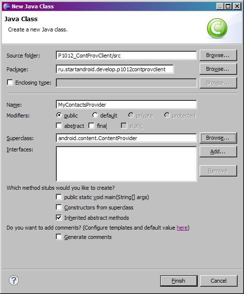
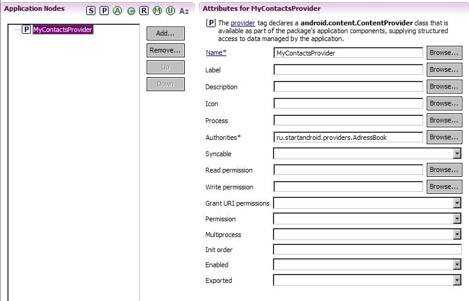
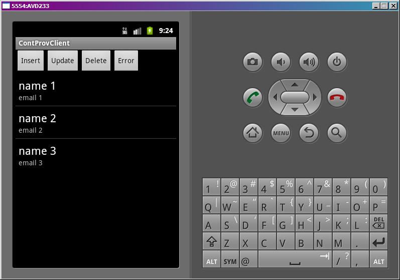
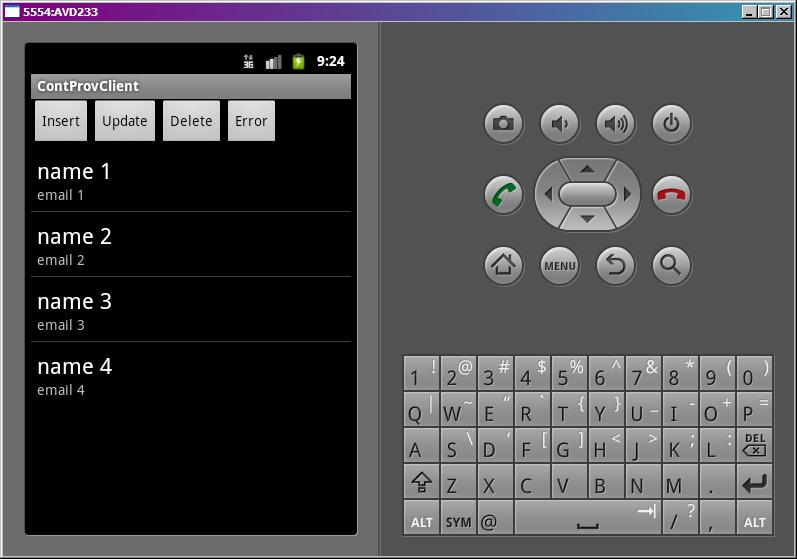

В этом уроке:
- создаем свой ContentProvider
Content Provider – это способ расшарить для общего пользования данные вашего приложения. Обычно это данные из БД. И создание класса провайдера похоже на создание обычного класса для работы с БД. Мы используем SQLiteOpenHelper для управления базой, и реализуем методы query, insert, update, delete класса ContentProvider.
Но есть и отличия. При работе с провайдером используется Uri. Он составной и похож на http-адрес. С помощью Uri система понимает, какой именно провайдер нужен, c какими данными необходимо работать и с какой конкретно записью. Uri можно представить в таком виде: content://<authority>/<path>/<id>.
Например, возьмем Uri - content://ru.startandroid.provider.AdressBook/contacts/7 и разложим на части:
content:// - это стандартное начало для адреса провайдера.
ru.startandroid.provider.AdressBook– это authority. Определяет провайдера (если проводить аналогию с базой данных, то это имя базы).
contacts – это path. Какие данные от провайдера нужны (таблица).
7 – это ID. Какая конкретно запись нужна (ID записи)
path может быть составным – например contacts/phones или contacts/email. Это используется, если структура данных достаточно обширна, и данные хранятся в нескольких таблицах в соответствии с некоторой логикой и организацией.
ID может быть не указан. Это означает, что будем работать со всеми записями из path.
Вышерассмотренный пример Uri указывает системе, что мы хотим достучаться до провайдера адресной книги ru.startandroid.provider.AdressBook, и получить доступ к контакту с ID = 7.
Попробуем создать свой провайдер. Пусть это будет некая адресная книга – список контактов. Для каждого контакта будем хранить всего два атрибута: имя и емэйл.
И отдельно создадим приложение, которое будет к этому провайдеру обращаться и манипулировать данными – читать, добавлять, изменять, удалять.
Начнем с провайдера. Создадим проект без Activity:
Project name: P1011_ContentProvider
Build Target: Android 4.0
Application name: ContentProvider
Package name: ru.startandroid.develop.p1011contentprovider
Создаем класс MyContactsProvider, наследующий android.content.ContentProvider

Он предлагает нам реализовать кучу методов. Реализуем.
MyContactsProvider.java:
package ru.startandroid.develop.p1011contentprovider;
import android.content.ContentProvider;
import android.content.ContentUris;
import android.content.ContentValues;
import android.content.Context;
import android.content.UriMatcher;
import android.database.Cursor;
import android.database.sqlite.SQLiteDatabase;
import android.database.sqlite.SQLiteOpenHelper;
import android.net.Uri;
import android.text.TextUtils;
import android.util.Log;
public class MyContactsProvider extends ContentProvider {
final String LOG_TAG = "myLogs";
// // Константы для БД
// БД
static final String DB_NAME = "mydb";
static final int DB_VERSION = 1;
// Таблица
static final String CONTACT_TABLE = "contacts";
// Поля
static final String CONTACT_ID = "_id";
static final String CONTACT_NAME = "name";
static final String CONTACT_EMAIL = "email";
// Скрипт создания таблицы
static final String DB_CREATE = "create table " + CONTACT_TABLE + "("
+ CONTACT_ID + " integer primary key autoincrement, "
+ CONTACT_NAME + " text, " + CONTACT_EMAIL + " text" + ");";
// // Uri
// authority
static final String AUTHORITY = "ru.startandroid.providers.AdressBook";
// path
static final String CONTACT_PATH = "contacts";
// Общий Uri
public static final Uri CONTACT_CONTENT_URI = Uri.parse("content://"
+ AUTHORITY + "/" + CONTACT_PATH);
// Типы данных
// набор строк
static final String CONTACT_CONTENT_TYPE = "vnd.android.cursor.dir/vnd."
+ AUTHORITY + "." + CONTACT_PATH;
// одна строка
static final String CONTACT_CONTENT_ITEM_TYPE = "vnd.android.cursor.item/vnd."
+ AUTHORITY + "." + CONTACT_PATH;
//// UriMatcher
// общий Uri
static final int URI_CONTACTS = 1;
// Uri с указанным ID
static final int URI_CONTACTS_ID = 2;
// описание и создание UriMatcher
private static final UriMatcher uriMatcher;
static {
uriMatcher = new UriMatcher(UriMatcher.NO_MATCH);
uriMatcher.addURI(AUTHORITY, CONTACT_PATH, URI_CONTACTS);
uriMatcher.addURI(AUTHORITY, CONTACT_PATH + "/#", URI_CONTACTS_ID);
}
DBHelper dbHelper;
SQLiteDatabase db;
public boolean onCreate() {
Log.d(LOG_TAG, "onCreate");
dbHelper = new DBHelper(getContext());
return true;
}
// чтение
public Cursor query(Uri uri, String[] projection, String selection,
String[] selectionArgs, String sortOrder) {
Log.d(LOG_TAG, "query, " + uri.toString());
// проверяем Uri
switch (uriMatcher.match(uri)) {
case URI_CONTACTS: // общий Uri
Log.d(LOG_TAG, "URI_CONTACTS");
// если сортировка не указана, ставим свою - по имени
if (TextUtils.isEmpty(sortOrder)) {
sortOrder = CONTACT_NAME + " ASC";
}
break;
case URI_CONTACTS_ID: // Uri с ID
String id = uri.getLastPathSegment();
Log.d(LOG_TAG, "URI_CONTACTS_ID, " + id);
// добавляем ID к условию выборки
if (TextUtils.isEmpty(selection)) {
selection = CONTACT_ID + " = " + id;
} else {
selection = selection + " AND " + CONTACT_ID + " = " + id;
}
break;
default:
throw new IllegalArgumentException("Wrong URI: " + uri);
}
db = dbHelper.getWritableDatabase();
Cursor cursor = db.query(CONTACT_TABLE, projection, selection,
selectionArgs, null, null, sortOrder);
// просим ContentResolver уведомлять этот курсор
// об изменениях данных в CONTACT_CONTENT_URI
cursor.setNotificationUri(getContext().getContentResolver(),
CONTACT_CONTENT_URI);
return cursor;
}
public Uri insert(Uri uri, ContentValues values) {
Log.d(LOG_TAG, "insert, " + uri.toString());
if (uriMatcher.match(uri) != URI_CONTACTS)
throw new IllegalArgumentException("Wrong URI: " + uri);
db = dbHelper.getWritableDatabase();
long rowID = db.insert(CONTACT_TABLE, null, values);
Uri resultUri = ContentUris.withAppendedId(CONTACT_CONTENT_URI, rowID);
// уведомляем ContentResolver, что данные по адресу resultUri изменились
getContext().getContentResolver().notifyChange(resultUri, null);
return resultUri;
}
public int delete(Uri uri, String selection, String[] selectionArgs) {
Log.d(LOG_TAG, "delete, " + uri.toString());
switch (uriMatcher.match(uri)) {
case URI_CONTACTS:
Log.d(LOG_TAG, "URI_CONTACTS");
break;
case URI_CONTACTS_ID:
String id = uri.getLastPathSegment();
Log.d(LOG_TAG, "URI_CONTACTS_ID, " + id);
if (TextUtils.isEmpty(selection)) {
selection = CONTACT_ID + " = " + id;
} else {
selection = selection + " AND " + CONTACT_ID + " = " + id;
}
break;
default:
throw new IllegalArgumentException("Wrong URI: " + uri);
}
db = dbHelper.getWritableDatabase();
int cnt = db.delete(CONTACT_TABLE, selection, selectionArgs);
getContext().getContentResolver().notifyChange(uri, null);
return cnt;
}
public int update(Uri uri, ContentValues values, String selection,
String[] selectionArgs) {
Log.d(LOG_TAG, "update, " + uri.toString());
switch (uriMatcher.match(uri)) {
case URI_CONTACTS:
Log.d(LOG_TAG, "URI_CONTACTS");
break;
case URI_CONTACTS_ID:
String id = uri.getLastPathSegment();
Log.d(LOG_TAG, "URI_CONTACTS_ID, " + id);
if (TextUtils.isEmpty(selection)) {
selection = CONTACT_ID + " = " + id;
} else {
selection = selection + " AND " + CONTACT_ID + " = " + id;
}
break;
default:
throw new IllegalArgumentException("Wrong URI: " + uri);
}
db = dbHelper.getWritableDatabase();
int cnt = db.update(CONTACT_TABLE, values, selection, selectionArgs);
getContext().getContentResolver().notifyChange(uri, null);
return cnt;
}
public String getType(Uri uri) {
Log.d(LOG_TAG, "getType, " + uri.toString());
switch (uriMatcher.match(uri)) {
case URI_CONTACTS:
return CONTACT_CONTENT_TYPE;
case URI_CONTACTS_ID:
return CONTACT_CONTENT_ITEM_TYPE;
}
return null;
}
private class DBHelper extends SQLiteOpenHelper {
public DBHelper(Context context) {
super(context, DB_NAME, null, DB_VERSION);
}
public void onCreate(SQLiteDatabase db) {
db.execSQL(DB_CREATE);
ContentValues cv = new ContentValues();
for (int i = 1; i <= 3; i++) {
cv.put(CONTACT_NAME, "name " + i);
cv.put(CONTACT_EMAIL, "email " + i);
db.insert(CONTACT_TABLE, null, cv);
}
}
public void onUpgrade(SQLiteDatabase db, int oldVersion, int newVersion) {
}
}
}Кода много, но практически ничего нового для нас нет. В основном идет работа с БД.
В начале идет куча констант. Константы для БД должны быть знакомы и понятны по прошлым урокам, их я не объясняю. Поясню только, что у нас в БД будет всего одна таблица contacts с тремя полями: _id, name и email.
Далее идут константы AUTHORITY и CONTACT_PATH – это составные части Uri. Мы это уже обсуждали в начале урока. Из этих двух констант и префикса content:// мы формируем общий Uri - CONTACT_CONTENT_URI. Т.к. здесь не указан никакой ID, этот Uri дает доступ ко всем контактам.
У нас тут получилось, что имя таблицы в БД совпало с path в Uri. Это вовсе необязательно, они могут быть разными.
Далее описываем MIME-типы данных, предоставляемых провайдером. Один для набора данных, другой для конкретной записи. У меня пока что мало опыта работы с провайдерами, и я не очень понимаю, где и как можно эти типы данных использовать. Но реализовать их надо, поэтому делаем это. Мы будем возвращать их в методе getType нашего провайдера.
Далее создаем и описываем UriMatcher и константы для него. UriMatcher – это что-то типа парсера. В методе addURI мы даем ему комбинацию: authority, path и константа. Причем, мы можем использовать спецсимволы: * - строка любых символов любой длины, # - строка цифр любой длины. На вход провайдеру будут поступать Uri, и мы будем сдавать их в UriMatcher на проверку. Если Uri будет подходить под комбинацию authority и path, ранее добавленных в addURI, то UriMatcher вернет константу из того же набора: authority, path, константа.
Т.е. строка:
uriMatcher.addURI(AUTHORITY, CONTACT_PATH, URI_CONTACTS);
означает, что мы добавили в uriMatcher комбинацию значений AUTHORITY, CONTACT_PATH и URI_CONTACTS.
А строка
uriMatcher.addURI(AUTHORITY, CONTACT_PATH + "/#", URI_CONTACTS_ID);
означает, что мы добавили в uriMatcher комбинацию значений AUTHORITY, CONTACT_PATH + "/#" и URI_CONTACTS_ID. # - это маска для строки из цифр. А если у нас к path добавляется число, это значит - нам дают ID и мы будем работать с конкретной записью.
И теперь, если мы попросим uriMatcher проверить Uri, состоящий из AUTHORITY и CONTACT_PATH, он вернет нам значение URI_CONTACTS. А если дадим ему Uri, состоящий из AUTHORITY, CONTACT_PATH и числа (ID), то он вернет нам URI_CONTACTS_ID. А мы по этим константам определим – работать со всеми записями или какой-то конкретной.
В общем, на словах все очень сложно получилось, в коде все проще будет. Но главный смысл этого uriMatcher в том, что он определит, какой Uri к нам пришел – общий или с ID. Если общий – то вернет URI_CONTACTS, если с ID – то вернет URI_CONTACTS_ID.
Разбираем методы.
В OnCreate создаем DBHelper – уже знакомый нам помощник для работы с БД.
В методе query мы получаем на вход Uri и набор параметров для выборки из БД: projection - столбцы, selection - условие, selectionArgs – аргументы для условия, sortOrder – сортировка. Опять же, эти параметры уже знакомы нам по работе с БД.
Далее мы отдаем uri в метод match объекта uriMatcher. Он его разбирает, сверяет с теми комбинациями authority/path, которые мы давали ему в методах addURI и выдает константу из соответствующей комбинации. Если это URI_CONTACTS, значит нам пришел общий Uri и от провайдера хотят получить все его записи. В этом случае мы проверим, указана ли сортировка. Если нет, то поставим сортировку по имени. Как вы понимаете, эта операция с сортировкой совершенна необязательна. Мы могли и ничего не делать. Если же мы получили URI_CONTACTS_ID, то провайдер должен вернуть запись по конкретному ID. Для этого мы извлекаем ID из Uri методом getLastPathSegment и добавляем его в условие selection.
Если uriMatcher не смог опознать Uri, то будем выдавать IllegalArgumentException. Вы, разумеется, можете тут прописать свое решение этой проблемы.
Далее мы получаем БД и выполняем для нее метод query, получаем cursor. Регистрируем этот cursor, чтобы он получал уведомления, когда будут меняться данные, соответствующие общему Uri - CONTACT_CONTENT_URI. При изменении какой-либо конкретной записи, уведомление также будет срабатывать. В конце возвращаем cursor.
В insert мы проверяем, что нам пришел наш общий Uri. Если все ок, то вставляем данные в таблицу, получаем ID. Этот ID мы добавляем к общему Uri и получаем Uri с ID. По идее, это можно сделать и обычным сложением строк, но рекомендуется использовать метод withAppendedId объекта. Далее мы уведомляем систему, что поменяли данные, соответствующие resultUri. Система посмотрит, не зарегистрировано ли слушателей на этот Uri. Увидит, что мы регистрировали курсор, и даст ему знать, что данные обновились. В конце мы возвращаем resultUri, соответствующий новой добавленной записи.
В delete мы проверяем, какой Uri нам пришел. Если с ID, то фиксим selection – добавляем туда условие по ID. Выполняем удаление в БД, получаем кол-во удаленных записей. Уведомляем, что данные изменились. Возвращаем кол-во удаленных записей.
В update мы проверяем, какой Uri нам пришел. Если с ID, то фиксим selection – добавляем туда условие по ID. Выполняем обновление в БД, получаем кол-во обновленных записей. Уведомляем, что данные изменились. Возвращаем кол-во обновленных записей.
В методе getType возвращаем типы соответственно типу Uri – общий или с ID.
Класс DBHelper помогает нам создать БД и наполнить ее первоначальными данными. Обновление здесь не реализуем.
Осталось прописать класс провайдера в манифесте. Делается это аналогично, как мы прописываем Activity или сервис. Только из списка выбираем Provider. В Name выбираем наш класс. И заполняем поле Authorities, сюда необходимо прописать значение из константы AUTHORITY - ru.startandroid.providers.AdressBook.

Теперь, когда система получит запрос на получение данных по Uri с authority = ru.startandroid.providers.AdressBook, она будет работать с нашим провайдером.
С провайдером все. Его можно инсталлить на AVD. Делается это как обычно, просто на экране ничего не появится, т.к. нет Activity. А в консоли будут примерно такие строки:
Uploading P1011_ContentProvider.apk onto device 'emulator-5554'
Installing P1011_ContentProvider.apk...
Success!
\P1011_ContentProvider\bin\P1011_ContentProvider.apk installed on device
Done!
Теперь пишем приложение, которое будет к провайдеру обращаться. Создадим проект:
Project name: P1012_ContProvClient
Build Target: Android 4.0
Application name: ContProvClient
Package name: ru.startandroid.develop.p1012contprovclient
Create Activity: MainActivity
Добавим в strings.xml строки:
<string name="insert">Insert</string>
<string name="update">Update</string>
<string name="delete">Delete</string>
<string name="error">Error</string>Экран main.xml:
<?xml version="1.0" encoding="utf-8"?>
<LinearLayout
xmlns:android="http://schemas.android.com/apk/res/android"
android:layout_width="fill_parent"
android:layout_height="fill_parent"
android:orientation="vertical">
<LinearLayout
android:layout_width="match_parent"
android:layout_height="wrap_content">
<Button
android:id="@+id/btnInsert"
android:layout_width="wrap_content"
android:layout_height="wrap_content"
android:onClick="onClickInsert"
android:text="@string/insert">
</Button>
<Button
android:id="@+id/btnUpdate"
android:layout_width="wrap_content"
android:layout_height="wrap_content"
android:onClick="onClickUpdate"
android:text="@string/update">
</Button>
<Button
android:id="@+id/btnDelete"
android:layout_width="wrap_content"
android:layout_height="wrap_content"
android:onClick="onClickDelete"
android:text="@string/delete">
</Button>
<Button
android:id="@+id/btnError"
android:layout_width="wrap_content"
android:layout_height="wrap_content"
android:onClick="onClickError"
android:text="@string/error">
</Button>
</LinearLayout>
<ListView
android:id="@+id/lvContact"
android:layout_width="match_parent"
android:layout_height="wrap_content">
</ListView>
</LinearLayout>4 кнопки для операций с данными и список для вывода данных провайдера.
MainActivity.java:
package ru.startandroid.develop.p1012contprovclient;
import android.app.Activity;
import android.content.ContentUris;
import android.content.ContentValues;
import android.database.Cursor;
import android.net.Uri;
import android.os.Bundle;
import android.util.Log;
import android.view.View;
import android.widget.ListView;
import android.widget.SimpleCursorAdapter;
public class MainActivity extends Activity {
final String LOG_TAG = "myLogs";
final Uri CONTACT_URI = Uri
.parse("content://ru.startandroid.providers.AdressBook/contacts");
final String CONTACT_NAME = "name";
final String CONTACT_EMAIL = "email";
/** Called when the activity is first created. */
@Override
public void onCreate(Bundle savedInstanceState) {
super.onCreate(savedInstanceState);
setContentView(R.layout.main);
Cursor cursor = getContentResolver().query(CONTACT_URI, null, null,
null, null);
startManagingCursor(cursor);
String from[] = { "name", "email" };
int to[] = { android.R.id.text1, android.R.id.text2 };
SimpleCursorAdapter adapter = new SimpleCursorAdapter(this,
android.R.layout.simple_list_item_2, cursor, from, to);
ListView lvContact = (ListView) findViewById(R.id.lvContact);
lvContact.setAdapter(adapter);
}
public void onClickInsert(View v) {
ContentValues cv = new ContentValues();
cv.put(CONTACT_NAME, "name 4");
cv.put(CONTACT_EMAIL, "email 4");
Uri newUri = getContentResolver().insert(CONTACT_URI, cv);
Log.d(LOG_TAG, "insert, result Uri : " + newUri.toString());
}
public void onClickUpdate(View v) {
ContentValues cv = new ContentValues();
cv.put(CONTACT_NAME, "name 5");
cv.put(CONTACT_EMAIL, "email 5");
Uri uri = ContentUris.withAppendedId(CONTACT_URI, 2);
int cnt = getContentResolver().update(uri, cv, null, null);
Log.d(LOG_TAG, "update, count = " + cnt);
}
public void onClickDelete(View v) {
Uri uri = ContentUris.withAppendedId(CONTACT_URI, 3);
int cnt = getContentResolver().delete(uri, null, null);
Log.d(LOG_TAG, "delete, count = " + cnt);
}
public void onClickError(View v) {
Uri uri = Uri.parse("content://ru.startandroid.providers.AdressBook/phones");
try {
Cursor cursor = getContentResolver().query(uri, null, null, null, null);
} catch (Exception ex) {
Log.d(LOG_TAG, "Error: " + ex.getClass() + ", " + ex.getMessage());
}
}
}В CONTACT_URI мы храним общий Uri. В CONTACT_NAME и CONTACT_EMAIL – имена полей.
В onCreate мы используем метод getContentResolver, чтобы получить ContentResolver. Этот объект – посредник между нами и провайдером. Мы вызываем его метод query и передаем туда Uri. Остальные параметры оставляем пустыми – т.е. нам вернутся все записи, все поля и сортировку мы не задаем. Полученный курсор мы передаем в Activity на управление – метод startManagingCursor. Далее создаем адаптер и присваиваем его списку.
В onClickInsert мы используем метод insert для добавления записей в провайдер. Этот метод возвращает нам Uri, соответствующий новой записи.
В onClickUpdate мы создаем Uri, соответствующий записи с ID = 2, и апдейтим эту запись в провайдере.
В onClickDelete мы создаем Uri, соответствующий записи с ID = 3, и удаляем эту запись в провайдере.
В onClickError мы пытаемся получить записи по Uri, который не знает провайдер. В его uriMatcher не добавляли информации об этом Uri. В этом случае мы генерировали в провайдере ошибку. Здесь попробуем поймать ее.
Все сохраняем и запускаем приложение.

В логах:
onCreate
query, content://ru.startandroid.providers.AdressBook/contacts
URI_CONTACTS
Создался провайдер. Выполнился его метод query и получил на вход Uri - content://ru.startandroid.providers.AdressBook/contacts. uriMatcher вернул URI_CONTACTS, т.е. опознал Uri – как общий, запрашивающий все данные. В итоге мы получили курсор со всеми данными и вывели их в список.
Жмем Insert. Появилась новая строка в списке.

Тут надо отметить, что мы вообще не трогали ни курсор, ни адаптер, ни список. Мы только добавили запись в провайдер, а наш список сам обновился. Это работают уведомления, которые мы прописывали в методах провайдера. Курсор ждет уведомления об обновлениях провайдера, а метод вставки ему такое уведомление отправил.
Логи:
insert, content://ru.startandroid.providers.AdressBook/contacts
insert, result Uri : content://ru.startandroid.providers.AdressBook/contacts/4
Выполнился метод insert, получил на вход общий Uri, в котором указано, в какую именно таблицу вставлять данные. Данные добавлены и провайдер вернул Uri новой записи: content://ru.startandroid.providers.AdressBook/contacts/4
Жмем Update.
Мы обновили вторую запись, и она ушла в конец списка, т.к. сортировку мы еще в провайдере настроили по имени, если не указано иное.
Логи:
update, content://ru.startandroid.providers.AdressBook/contacts/2
URI_CONTACTS_ID, 2
update, count = 1
Сработал метод update, получил на вход Uri = content://ru.startandroid.providers.AdressBook/contacts/2. UriMatcher верно распознал, что полученный Uri содержит ID. Провайдер обновил запись и вернул нам кол-во обновленных записей.
Жмем Delete.
Удалили запись с ID = 3.
Логи:
delete, content://ru.startandroid.providers.AdressBook/contacts/3
URI_CONTACTS_ID, 3
delete, count = 1
Сработал метод delete, получил на вход Uri = content://ru.startandroid.providers.AdressBook/contacts/3. UriMatcher определил, что Uri с ID. Запись была удалена и мы получили кол-во удаленных записей.
Жмем Error.
Логи:
query, content://ru.startandroid.providers.AdressBook/phones
Error: class java.lang.IllegalArgumentException, Wrong URI: content://ru.startandroid.providers.AdressBook/phones
Был выполнен метод query с Uri = content://ru.startandroid.providers.AdressBook/phones. Но UriMatcher не знает такую комбинацию authority (ru.startandroid.providers.AdressBook) и path (phones). В этой ситуации мы настроили провайдер так, что он генерит ошибку. В приложении мы эту ошибку ловим и выдаем в лог.
Есть несколько моментов, которые хотелось бы отдельно отметить.
managedQuery
Мы в приложении использовали методы query и startManagingCursor. У Activity есть метод, который объединяет два этих метода - managedQuery. Он берет на вход те же параметры, что и query и возвращает курсор, который уже находится под управлением Activity.
Константы провайдера
В приложении мы создали константы, и поместили туда значения из провайдера. Получился хардкод. А правильнее было бы использовать эти константы прямо из класса провайдера. Для этого создателю провайдера можно выделить все необходимые константы в отдельный класс, создать из него библиотеку .jar и распространять ее. Разработчики добавят ее в свой проект, и смогут оттуда использовать все необходимые им константы для работы с провайдером.
getWritableDatabase
Метод getWritableDatabase по причинам производительности не рекомендуется вызывать в onCreate методе провайдера. Поэтому мы в onCreate только создавали DBHelper, а в методах query, insert и прочих вызывали getWritableDatabase() и получали доступ к БД.
Условия выборки
Я не стал в этом уроке использовать возможности выборки и сортировки при работе с провайдером. Они полностью аналогичны тем, что мы проходили в уроках по SQLite. Не забывайте про них.
Более подробную инфу об этом всем можно найти на офиц.сайте.